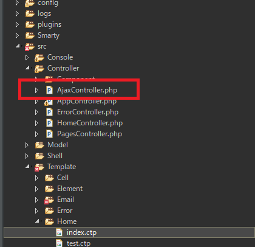
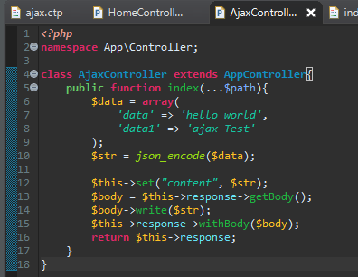
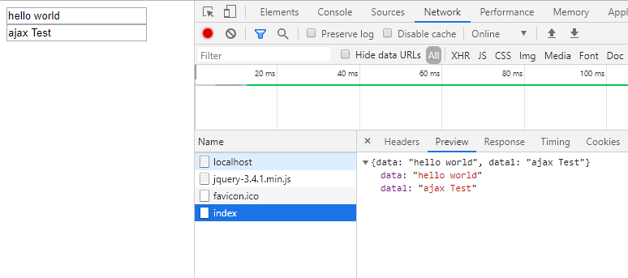
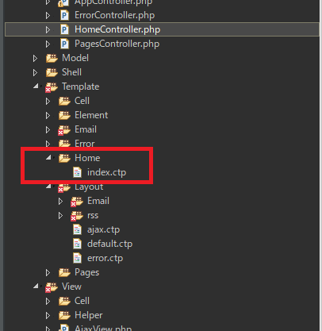
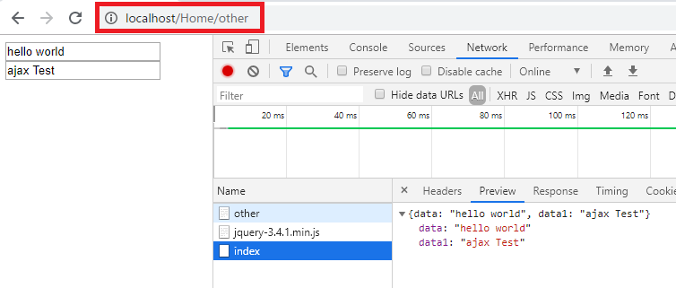

[CakePHP] PHPのCakeからAjax要請がある時、jsonタイプ(json_encode関数)でResponseする方法とControllerでViewを選択する方法
こんにちは。明月です。
この投稿はPHPのCakeからAjax要請がある時、jsonタイプ(json_encode関数)でResponseする方法とControllerでViewを選択する方法に関する説明です。
前の投稿でCake+Smartyの組み合わせでウェブブラウザから要請がくるとControllerを通ってViewを読み込んでResponseする方法に関して説明しました。
link - [CakePHP] MVCフレームワークのCakeをインストールする方法
ウェブサービスでは必ずHtmlドキュメント形式でResponseすることじゃありません。例えば、Ajaxの機能ならjsonタイプのデータを受取る時もあるし、ファイルをダウンロードする時もあります。
その時にはActionメソッドでリターン値がテキストやバイナリタイプで受け取ってブラウザ側にResponseしなければならないです。
JavaだとResponseBodyアノテーションを設定してString値にリターンすることと同じ意味です。
これからActionメソッドからajax値を受け取りましょう。
Controllerを追加します。AjaxControllerを追加してAjaxデータを生成します。

<?php
namespace App\Controller;
class AjaxController extends AppController {
public function index(...$path) {
// jsonタイプに変換する配列を作る。
$data = array (
'data' => 'hello world',
'data1' => 'ajax Test'
);
// json_encodeはarrayタイプをjsonタイプに変換する関数。
$str = json_encode($data);
// responseでbody streamを取得する。
$body = $this->response->getBody();
// bodyにjsonタイプを入れる。
$body->write($str);
// bodyをresponseに合わせる。
$this->response->withBody($body);
// viewを入れることじゃなく、ただReponse形式に変換する。
return $this->response;
}
}

上の例でjson_encodeの関数はarrayをjson形式に変換する関数です。参考にObjectタイプはjsonタイプに変換しません。
Java(Gson)やC#(Newton)はライブラリに提供しますが、PHPの場合は内部関数で提供します。PHPの長所は細かい内部関数が多いことです。別にライブラリがなくてもプログラムを立ち上げることで無理がありません。
また、ソースに戻してHomeのindexのビューでJavascriptでajaxを呼出す関数を作って確認しましょう。
<input type="text" id="data"><br />
<input type="text" id="data1">
<script src="https://code.jquery.com/jquery-3.4.1.min.js"></script>
<script>
$(function() {
$.ajax({
type : "GET",
url : "/Ajax/index",
dataType: "json",
success : function(msg) {
$("#data").val(msg.data);
$("#data1").val(msg.data1);
}
});
});
</script>

ajaxから「/Ajax/index」を呼出します。AjaxControllerのindex関数が呼ばれます。
jsonタイプで要求しています。idがdataのオブジェクトにはjsonのdataの値を、data1のオブジェクトにはjsonのdata1の値を入れました。
Actionメソッドのリターン値で許すデータはnullと$this->response値だけです。その以外のデータはエラーが発生します。
そうするとControllerのActionとテンプレートのファイル名はいつも一致しなければならないかと考えるとそうじゃありません。
なぜならその結果は似てるなビューページがある時、例えば掲示板のサイトで追加、修正ページの場合はページ形が似ているがそうするとviewページを２つに作成して一つはコピーするという意味になります。
でもCakeフレームワークにはビューページを選択できるようにrenderという関数があります。
<?php
namespace App\Controller;
class HomeController extends AppController {
// index関数はなにも設定してないので、index.ctlを呼出します。
public function index(...$path) {
}
// other関数の場合はrender関数で/Home/index.ctlページを呼出します。
public function other(...$path) {
$this->render("/Home/index");
}
}
other関数をみるとrender関数を利用してindex.ctlページを呼出すように設定しました。

ActionメソッドとViewファイル名は必ず一致しなくてもいいという意味になります。

上のAjaxの例を同じ結果になります。
ここまでPHPのCakeからAjax要請がある時、jsonタイプ(json_encode関数)でResponseする方法とControllerでViewを選択する方法に関する説明でした。
ご不明なところや間違いところがあればコメントしてください。
- [CakePHP] Errorページを設定する方法2020/02/20 03:00:00
- [CakePHP] Transactionを使う方法とEntityクラスを利用してInsert、Update、Deleteする方法2020/02/19 03:00:00
- [CakePHP] ORMのテーブルFetch設定2020/02/18 03:00:00
- [CakePHP] Cakeフレームワークでデータベースに接続する時に使うQuery式とEntityクラス、Tableクラス、ResultSet2020/02/17 08:16:23
- [CakePHP] データベース(MariaDB(Mysql))を接続する方法2020/02/14 03:00:00
- [PHP] namespaceとuse2020/02/13 03:00:00
- [CakePHP] RequestとResponseに関して2020/02/12 03:00:02
- [CakePHP] PHPのCakeからAjax要請がある時、jsonタイプ(json_encode関数)でResponseする方法とControllerでViewを選択する方法2020/02/08 03:00:00
- [CakePHP] MVCフレームワークのCakeをインストールする方法2020/02/07 03:00:02
- [PHP] 自動require及びincludeをする方法(spl_autoload_register)2020/02/05 03:00:00
- [PHP] 匿名関数(ラムダ式)とクロージャ(closure)2020/02/04 03:00:00
- [PHP] PHPのコーディング領域とデザイン領域を分離するテンプレートライブラリ Smarty2020/02/02 03:00:00
- [PHP] Reflection - Variable編2020/02/01 03:00:00
- [PHP] Reflection - Method編2020/01/31 03:00:00
- [PHP] Reflection - Class編2020/01/30 03:00:00
- [C#] FTPに接続してファイルダウンロード、アップロードする方法2020/03/27 19:20:14
- [C#] HttpWebRequestを利用してウェブページを読み込みする方法2020/03/27 00:23:19
- [C#] Base64のエンコード、デコードする方法2020/03/26 02:19:50
- [Java] 日付フォーマット(SimpleDateFormat)を使う方法2020/03/25 00:36:53
- [Java] サーブレット(Servlet)の環境でファイルアップロード(プログレスバーでファイルアップロード状態を表示する方法)する方法2020/03/24 00:48:21
- [Java] Spring環境でファイルアップロード(プログレスバーでファイルアップロード状態を表示する方法)する方法2020/03/22 23:15:12
- [Java] FTPに接続してファイルをダウンロード、アップロードする方法(FTPClient)2020/03/20 02:44:36
- [Window] WindowでFTPサーバを構築する方法2020/03/19 03:27:22
- [Java] JSPのSpring環境でschedulerのcronを使う方法2020/03/18 00:24:32
- [Java] POIを利用してExcelを扱う方法2020/03/17 01:48:00
- [Java] PDFを出力する方法(itextpdf)2020/03/13 00:47:31
- [Java] ログライブラリ(log4j)を使う方法2020/03/12 00:54:39
- [Java] Jsonタイプのデータを使う方法(Gsonライブラリ)2020/03/11 00:30:15
- [Java] Base64をエンコード、デコードする方法2020/03/09 10:24:01
- [Java] cmdコマンドを実行するための方法2020/03/06 18:01:10